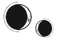

CAPÍTULO 3
Cuando volvieron a meter a Helena en el ascensor de la Central, contó los pisos de la Torre conforme bajaban.
Durante siglos, la Torre de Alquimia había sido una maravilla arquitectónica. Solo tenía cinco pisos cuando se construyó como monumento a la Primera Guerra Nigromántica. En aquel momento, la resonancia alquímica era una habilidad arcana considerada mágica. Los que la practicaban se rodeaban de mitos y misterios, como Cetus, el primer alquimista del Norte.
Los Holdfast y la Academia habían cambiado esa percepción; establecieron la alquimia como la ciencia noble, algo digno de estudio y dominio. Cuando la Academia de Alquimia amenazó con superar en altura a la Torre, usaron sistemas de poleas forjados con alquimia para añadir pisos en la base. Fue el edificio más alto del continente Norte durante casi dos siglos, alzándose por encima de la ciudad que se expandía a sus pies, y los alquimistas jamás dejaron de atravesar sus puertas.
Los estudios de alquimia que se llevaban a cabo en el Norte estaban entrelazados con la propia estructura de la Torre. Los cinco primeros pisos, los que contaban con las aulas más grandes, eran los «cimientos», llenos de iniciados que todavía estaban descubriendo su resonancia y aprendiendo los principios de transmutación más básicos. Había que pasar exámenes anuales para ir ascendiendo. Después del quinto año, la mayoría de los alumnos abandonaban la Academia con un título que les permitía unirse a los gremios, y solo los universitarios más cualificados continuaban al siguiente piso de la Torre, que se iba estrechando. Allí estudiaban temas y disciplinas más técnicas. Solo unos pocos subían a los pisos de posgrado e investigación para conseguir el rango de gran maestre.
El ascensor se detuvo en alguno de los antiguos pisos de investigación.
Helena aguzó la vista y se obligó a mirar a través de un aura de dolor que le nublaba la visión constantemente. Veía las paredes borrosas. Sus ojos fueron incapaces de enfocar nada hasta que dejaron de empujar su camilla y la colocaron en el centro de una sala vacía.
Probablemente antes habría sido un laboratorio privado.
Le desabrocharon las correas que la mantenían atada, y Stroud se detuvo a su lado para comprobar las muñecas de Helena.
Los tubos que se colaban entre su cúbito y su radio le daban náuseas y le provocaban la profunda sensación de que algo iba mal. Ni siquiera podía doblar los dedos sin sentir que los músculos, tendones, nervios y venas se veían obligados a acomodarse en aquel espacio reducido, junto a la anulación que le habían insertado.
—Muy bien —dijo Stroud para sí misma antes de girarse para marcharse. Al cerrar la puerta, Helena la escuchó añadir—: Que no entre nadie sin mi permiso.
Helena oyó un sonoro chasquido y el giro de una cerradura, y la dejaron sola.
Se incorporó, aunque el fármaco ya había desaparecido de sus venas, por lo que le dolían los músculos y sentía calambres cada vez que los estiraba. Intentó levantarse, pero se desplomó en cuanto sus pies tocaron el suelo. Cayó pesadamente.
«Huye», le repetía una voz sin cesar. Pero no podía hacerlo; no la sostenían los brazos ni las piernas. Al verse privada de sus capacidades físicas, sus pensamientos se volvieron introspectivos.
¿De verdad había olvidado algo?
Tal vez la Llama Eterna no había desaparecido, sino que resistía como unas ascuas escondidas, esperando que llegara el momento oportuno. La posibilidad encendió una chispa de esperanza en su interior. ¿Cómo le habían hecho que olvidara?
Transferencia. Animancia. Las dos palabras le resultaban desconocidas.
Las repasó mentalmente. Intentó dar contexto a los comentarios que habían hecho: almas y mentes, y ocupar el paisaje mental de otra persona para transmutarla desde dentro. ¿Y la Llama Eterna había descubierto eso?
Desde luego que no, los creyentes consideraban que las almas eran inviolables. La Llama Eterna creía incluso que las alteraciones físicas de la vivemancia y la nigromancia suponían un riesgo para un alma inmortal.
La alteración de una mente, la transferencia de un alma: ambas cosas habrían sido consideradas como algo infinitamente peor.
Aun así, Shiseo afirmaba que la Llama Eterna había desarrollado una manera de hacer esta operación de transferencia mediante la animancia. Algo que Morrough, que había desentrañado los secretos de la inmortalidad, no había logrado descubrir.
¿Quién era Elain Boyle? A Helena no le sonaba el nombre y estaba segura de que nunca habían contado con una sanadora que se ocupara exclusivamente de Luc, y mucho menos con una sanadora personal.
Luc jamás habría consentido recibir nada que no se distribuyera de forma equitativa entre toda la Resistencia, y eso incluía los cuidados médicos y la sanación. Ni siquiera le gustaba que los paladines juraran protegerlo, a pesar de que se trataba de una tradición más antigua que la propia Paladia.
Stroud tenía que estar equivocada.
Sin embargo, existía un misterio oculto. Habían cambiado algo en su interior, un secreto enterrado con tal celo que Helena no lograba imaginar de qué podía tratarse.
Sintió más calambres recorriéndole el cuerpo. Permaneció en el suelo, encogida como una araña muerta, pero sin dejar de pensar.
¿Qué habría hecho Luc si fuera el único que siguiera con vida? Si estuviese cautivo, ya tendría un plan. Habría persuadido a Grace para que enviara un mensaje de su parte, comenzando a coordinar una manera de escapar, y también a idear cómo rescatar a todos los que estaban en el Reducto.
Eso es lo que él haría, pero ahora le tocaba a Helena.
No le fallaría, esta vez no.
Helena supuso que la transferencia empezaría de inmediato, pero, en cambio, pasaron lo que le parecieron días sin apenas moverse, mientras sus músculos se iban destensando poco a poco.
—Abstinencia —dijo Stroud con una mirada cargada de condescendencia mientras le introducía a Helena una sonda de alimentación por la nariz y le administraba suero fisiológico en el brazo para mantenerla sedada—. Da igual. Supongo que te enseñaron a disfrutar del sufrimiento. Después de todo, la vocación de una sanadora es el sacrificio, ¿no?
Stroud no escondía el desdén que sentía por Helena desde que descubrió que ambas eran vivemantes, pero en bandos opuestos de la guerra.
Stroud la consideraba una traidora.
—No me gustan esos espasmos —comentó poco después mientras la examinaba. Frunció los labios cuando Helena dejó caer una taza al sentir un calambre en los dedos—. No son causados por la anulación. ¿Sabes cuándo empezaron?
Helena negó con la cabeza y se encogió de dolor cuando notó el ardor frío que le provocó la resonancia de Stroud al deslizarse por su muñeca izquierda, serpenteando entre los huesos mientras la retorcía y manipulaba durante varios minutos.
—Por el estado en el que está, diría que te has roto esta muñeca unas cuantas veces. Hay una herida antigua en los nervios. ¿Te acuerdas de cuándo sucedió?
Helena no recordaba haberse hecho nunca un daño grave en las manos. Unas manos diestras eran vitales para canalizar y controlar la resonancia, tanto en el laboratorio de un alquimista como en la consulta de una sanadora. Siempre había tenido mucho cuidado con ellas.
—No se menciona nada en tu expediente de alumna, así que debió de ser durante la guerra, pero tampoco hay registros de ello.
Habían encontrado el expediente académico de Helena, y a Stroud le gustaba usarlo para interrogarla sobre aspectos insignificantes de su vida. Helena sospechaba que lo hacía porque tenía permiso para castigarla si se negaba a responder.
¿Dónde pusieron a prueba por primera vez su resonancia alquímica? En la embajada paladina de su hogar, las islas sureñas de Etras. ¿Qué edad tenía cuando emigró a Paladia para estudiar en la Academia de Alquimia? Diez años.
¿Cuántos cursos terminó en la Academia? Seis.
¿Recordaba la muerte del principado Apollo Holdfast? Sí, estaba en clase con Luc.
¿Cuándo se unió a la Resistencia? Cuando los gremios destituyeron al Gobierno legítimo y hubo una Resistencia a la que unirse.
A Stroud no le gustó esa respuesta.
¿Cuándo empezó a formar parte de la Orden de la Llama Eterna? Helena no quiso responder, pero Stroud tenía el libro con los miembros de la Orden, junto con los votos y el nombre de Helena, escritos con su propia sangre.
—¿Sabía el Consejo de la Llama Eterna que eras una vivemante cuando te uniste?
Helena negó con la cabeza.
Stroud se sentó y la fulminó con la mirada, a la espera de una respuesta verbal.
—Yo no sabía que lo era —dijo Helena al cabo de un tiempo—. Y después…, cuando todo el mundo lo supo…, a Luc no le importó. Él pensaba que las habilidades de una persona no cambiaban quién era, solo lo que hacía con ellas.
—Qué magnánimo. —La voz de Stroud sonó gélida. Arrugó el documento que tenía en la mano—. Una pena que no dejase el cargo. Todavía seguiría viva mucha gente con talento.
—Su familia era la elegida —respondió Helena, aunque sabía que no tenía sentido discutir.
—Sí, por el Sol —replicó Stroud con mofa, y su tono adquirió cierta virulencia—. Sé que no enseñaban astronomía moderna en la Academia, pero ¿has estudiado alguna vez las teorías astrológicas más actuales? Provienes de las islas comerciantes, al fin y al cabo; habrás conocido todo tipo de ideas. ¿De verdad crees que el Sol, a miles de kilómetros de distancia, miró a la Tierra y eligió un favorito? ¿Que una gota de luz solar le otorgó a Orion Holdfast tal condición divina que todos sus descendientes merecían gobernar sobre Paladia como si fueran dioses?
Helena apretó la mandíbula, pero Stroud no paró de hablar.
—Según tu expediente académico, se te consideraba inteligente. Seguro que no te tragaste todas las historias que te contaron sobre los Holdfast. Mírame a los ojos y dime: ¿de verdad crees que los Holdfast tenían derecho a gobernar?
Stroud clavó los dedos bajo la barbilla de Helena para obligarla a alzar la vista. Esta fijó sus ojos en el rostro de Stroud, sintiendo la amenaza de su resonancia.
—Mejor ellos que gente como tú.
Stroud quitó la mano y su resonancia se esfumó. Acto seguido, le dio una bofetada a Helena que le cruzó la cara con tanta fuerza que se golpeó la cabeza contra la pared.
—Si te hubieras unido a nuestra causa, podrías haber sido excepcional. —Stroud respiraba con dificultad mientras se inclinaba sobre Helena—. Habrías sido alguien, pero ahora no eres nada. Desperdiciaste tu talento en el bando equivocado y nadie te recordará. Eres ceniza, como todos los demás. Y una traidora a los vivemantes.
Cuando estuvo sola, Helena se llevó la mano a la hinchazón de la cara y sintió que le palpitaba la cabeza.
La Resistencia había considerado la guerra como un acto sagrado, una batalla divina entre el bien y el mal, una prueba de la Fe. Pero los motivos de Helena habían sido una cuestión personal.
Luc no necesitaba ser divino para que ella quisiera salvarlo. Aunque hubiese sido absolutamente ordinario, ella habría tomado las mismas decisiones.
¿Podría haber hecho algo que hubiera cambiado las cosas?
Cuando llegó a Paladia, pensó que aquello era el paraíso. Etras no tenía mucho metal como recurso natural. La resonancia era poco habitual. Había algunos gremios de alquimistas, pero ninguno ofrecía una formación reglada. Al llegar a Paladia, se sintió como si por fin estuviese en su hogar, como si hubiera encontrado el sitio en el que siempre debió estar.
Fue vagamente consciente de que existía una jerarquía entre los alquimistas que dividía incluso el cuerpo estudiantil, separando a las familias devotas y allegadas de los Holdfast de los gremios, pero no conocía lo suficiente de la política de la ciudad Estado como para entender su complejidad.
Lo único que sabía era que había alumnos que no le dirigían la palabra, que se reían cuando hacía preguntas y se burlaban de su acento y de cómo gesticulaba con las manos cuando hablaba. Más tarde descubrió que se trataba de los alumnos del gremio y que debía tratarlos con recelo.
Fue Luc quien le explicó que los alumnos del gremio pensaban que la matrícula de Helena debería haberse adjudicado a los gremios, aunque Luc le aseguró que estaban equivocados. La Academia de su familia no se había fundado para los gremios, sino para gente como ella, para los que no tenían la oportunidad de estudiar alquimia por su cuenta. Los alumnos del gremio no tenían ni por qué asistir; ya tenían asegurado sus puestos y su futuro. Para ellos, obtener una plaza en la Academia era cuestión de estatus y, cuando conseguían el certificado, se marchaban.
Pero Helena era especial. Sería de las que se quedaban cuando terminara el quinto año, de las que estudiarían algo más que los principios básicos de la alquimia. Ascendería a los pisos superiores, haría descubrimientos y se dedicaría a asuntos que cambiarían el mundo. Siempre recordarían su nombre.
¿Por qué querría la familia de Luc a otro alumno del gremio en su Academia cuando podían tener a alguien como ella?
Luc siempre tuvo la habilidad de hacer sentir especial a Helena, en vez de señalar lo fuera de lugar que estaba allí. A su vez, ella siempre quiso demostrarle que tenía razón, que había algo por lo que merecía la pena creer en ella. Su familia no cometería un error apoyándola.
Helena se centró en sus estudios e ignoró la hostilidad política que la rodeaba.
En ocasiones, Luc le mencionaba que los gremios creían que su familia estaba conteniendo el avance científico de la alquimia y poniendo trabas a la industrialización, y entonces señalaba las fábricas que había bajo la presa, que inundaban el cielo de nubes de humo negro. Decían que habían acusado a su padre de permitir que el país se quedara atrasado por culpa de la negligencia de su gobierno. O que los gremios proponían limitar el poder del principado a las cuestiones religiosas, mientras que ellos debían encargarse de gestionar el país.
Parecía que nada de lo que hiciera el principado Apollo era suficiente para los gremios; siempre estaban quejándose y exigiendo más.
Cuando asesinaron al principado Apollo, los gremios no lo consideraron una tragedia, sino una oportunidad. Aprovecharon que Luc solo tenía dieciséis años para usarlo como pretexto y declarar una reforma: Paladia ya no sería gobernada por las élites religiosas y un grupo de guerreros. La ciudad Estado pasaría a estar bajo el control del recién formado Concejo de Gremios.
A la Orden de la Llama Eterna no le habría costado demasiado contener la sublevación de los gremios si no hubiera sido por Morrough. Apareció de la nada en plena revuelta y empezó a ofrecer la inmortalidad. No se refería a una vida eterna de descomposición, sino a una inmune a la edad y a las heridas, descubierta gracias a la ciencia, no al poder divino.
Los gremios aprovecharon la oportunidad, y así comenzaron a aparecer los inmarcesibles. Al principio solamente se elegía a unos pocos selectos, que no solo eran inmortales, sino también expertos en los aspectos más avanzados de la alquimia. De repente, el poder y la vida eterna estaban al alcance de cualquiera que demostrara su lealtad a Morrough. Los aspirantes acudieron en masa a unirse y aliarse con los gremios.
La concepción de la «Nueva Paladia» que prometía el Concejo de Gremios se extendió entre los habitantes como una enfermedad.
Cuando la Llama Eterna intentó restaurar el orden, los inmarcesibles revelaron una nueva habilidad: la nigromancia, y a una escala nunca vista. En vez de reclutar sin criterio entre los aspirantes, esperaban a que los soldados de la Llama Eterna fueran atacados y fallecieran para luego reanimarlos y hacerlos luchar contra sus propios compañeros. Así crearon un ejército de muertos vivientes al servicio de la Llama Eterna.
Luc, recién coronado como principado, estaba convencido de que los ciudadanos de Paladia entrarían en razón cuando comprendieran, estupefactos, que se estaban aliando con nigromantes. Durante siglos, la nigromancia se había considerado un crimen moral en todo el continente. Ni siquiera los gremios se atreverían a ir tan lejos.
Se equivocó.
—Si eras sanadora, ¿por qué apenas se te menciona en los archivos del hospital?
Stroud regresó furiosa, con un montón de papeles en la mano.
El nombre de Helena casi no aparecía en ninguno de ellos. Stroud solo había conseguido encontrar su firma en el inventario de suministros médicos, una solicitud para un cuchillo básico de alquimia y unas pocas peticiones de ciertos compuestos a los departamentos de química y metalurgia. Lo único interesante era una lista preliminar de bajas en la que Helena figuraba entre los presuntos fallecidos.
A pesar de todo, según esos archivos militares que abarcaban años, Helena apenas había existido. Stroud parecía tomarlo como un agravio personal.
—¿Y bien?
—La sanación es un milagro; no es algo para lo que haga falta firmar —respondió Helena, recitando lo que le habían enseñado hacía tanto tiempo—. Usamos símbolos en los expedientes médicos para indicar que se ha… intervenido.
—¿Te refieres a…? —Stroud deslizó los documentos hasta llegar a uno que giró hacia Helena. En la esquina aparecía una medialuna con un tajo en medio—. ¿Esto?
Helena apenas asintió.
Stroud se quedó mirándolo.
—¿Entonces cómo demonios se controlan los procedimientos?
La presión se extendió desde el pecho hasta la garganta de Helena, oprimiéndola.
—La sanación no es un procedimiento.
El falcón Matias, consejero espiritual del Consejo de la Llama Eterna y superior directo de Helena, siempre fue estricto a la hora de exigir que la vivemancia no se documentara de ninguna forma que pudiera glorificarla. Según él, la vivemancia solo se purificaba mediante el altruismo.
Aunque los sanadores eran una figura relativamente común en las zonas remotas de Paladia, la vivemancia resultaba tan poco habitual que existían numerosas teorías sobre las capacidades de los vivemantes: si podían hechizar a los vivos, tal y como hacían los nigromantes con los muertos, por ejemplo, o realizar transmutaciones prohibidas sobre la carne viviente.
Helena solía pensar que esta percepción de los vivemantes era irracional y severa, pero tras conocer a Stroud empezaba a entenderla.
Stroud no hechizaba, pero era experta en paralizar y manipular a Helena mediante transmutaciones al menor descuido. Y, si Helena se retorcía demasiado, Stroud le soldaba los huesos para que se mantuviera quieta. Parecía disfrutar del hecho de que, técnicamente, no la estaba torturando. A veces dejaba a Helena así, inmovilizada, durante horas.
Fue un alivio cuando, finalmente, Stroud pareció perder el interés y anunció que ya no tenía tiempo para ocuparse de Helena. Varias veces al día acudían un par de necrómatas para sacarla de la celda y hacerla caminar por el pasillo que rodeaba el ascensor.
Recuperó la vista, aunque los necrómatas eran algo horrible de ver. La adipocira les confería un brillo grasiento y viscoso a las motas moradas y grisáceas de su piel, y la esclerótica de sus pupilas nubladas era roja o de un amarillo intenso. Las puntas de sus dedos estaban negras y en descomposición. El olor a conservantes químicos y a putrefacción le daba ganas de vomitar, pero no le permitían dejar de caminar hasta que sus piernas cedían y tenían que arrastrarla de vuelta a la celda.
Las caminatas se confundieron con los días. Helena había perdido la noción del tiempo que llevaba en la Central; las luces permanecían siempre encendidas, y todas las ventanas estaban cubiertas y tapiadas.
—¿Es ella? —Un hombre con rostro pálido, casi fantasmal, y una nariz puntiaguda y fina como una aguja salió de repente de una habitación y se interpuso en el camino de Helena mientras los necrómatas la obligaban a continuar su rutina interminable.
Helena profirió un grito ahogado de sorpresa. Frente a ella, vestido con ropas de bordados intrincados y joyas, estaba Jan Crowther, uno de los cinco miembros del Consejo de la Llama Eterna.
—Crowth…
Él estiró una mano cargada de anillos, la agarró por el hombro y la atrajo hacia sí para echarle un vistazo.
—¿Lo conocías? —preguntó. Le estaba clavando los dedos y los anillos en la piel.
Helena intentó liberarse, pero los necrómatas la sujetaron cuando Crowther se inclinó cada vez más, inhaló profundamente y sacó una lengua ancha y morada, como si quisiera lamerla.
Helena se encogió, pero Crowther estaba tan cerca que pudo distinguir cada detalle. Sus escleróticas mostraban un leve tono amarillento y por sus ojos ligeramente nublados surcaban unas venas oscuras. Tenía la piel cubierta de talco y desprendía un intenso olor a lavanda.
No era Crowther. Uno de los inmarcesibles estaba usando su cadáver.
En las pocas ocasiones en que sus heridas eran tan graves que ya no podían seguir regenerándose, por ejemplo, por haber resultado tan gravemente heridos en batalla que sus cuerpos inmortales no lograban curarse, los inmarcesibles podían trasladarse a sus necrómatas. Por eso la Resistencia los llamaba «liches».
Era una solución imperfecta; a pesar de que se mantenían vivos, los cuerpos iban pudriéndose poco a poco y perdían la capacidad regenerativa de los cuerpos originales, que eran casi inmunes. Helena sospechaba que Morrough estaba tan interesado en la transferencia porque era un método que abría la puerta a que los inmarcesibles pudieran trasladarse a cuerpos vivos.
El liche que estaba usando el cuerpo de Crowther dio un paso atrás y volvió a mirarla con un gesto extraño en el rostro.
—Te conozco —dijo en voz baja.
Le agarró la cara y la hizo girar de forma que la luz le llegaba desde un ángulo diferente. Sus ojos repasaron cada centímetro de su piel, como si estuviera buscando algo. Entonces el liche le cogió una de las manos; los pesados anillos negros se le clavaron contra la piel, y manipuló el grillete, provocándole una punzada de dolor en todo el brazo. Luego le miró los dedos y volvió a observar su rostro.
Los necrómatas no hicieron nada.
¿Era este el Sumo Inquisidor?
—Sí. Es ella. —Stroud apareció entonces, con un tono mucho más amable del que empleaba con Helena. Parecía molestarle la forma en la que el liche estaba tocando a Helena, pero no dijo nada—. Pronto estará lista.
El liche agarró a Helena del pelo. Cuando volvió a acercarse a ella, esbozó una mueca retorcida, con una mirada voraz y desesperada, algo que ella jamás había percibido en el semblante impasible de Crowther.
—La he visto en alguna parte. —La agarró con más fuerza, sacudiéndola con tanto ímpetu que a Helena se le cayó la cabeza hacia atrás—. ¿Dónde ha sido?
—Era la mascota de los Holdfast, maese gremial. Seguramente la conociste en la Academia.
El rostro del liche se contrajo con desdén al oír hablar de los Holdfast y la soltó de inmediato. De repente, había perdido todo el interés. Ahora parecía enfadado y por el cuello se le estaba extendiendo una sombra de color morado oscuro que le moteaba la cara.
—Esperaba algo más. Me dijeron que este encargo era algo especial.
Stroud se mordió el labio.
—Las apariencias no lo son todo. Puedes decirle al Sumo Inquisidor que pronto estará lista. Ahora querías comprobar cómo preparaban las habitaciones, ¿no? —Stroud señaló los ascensores—. Mi intención es comenzar con una remesa de prueba muy pronto para evaluar cuándo podemos poner en marcha todo esto. El interés es abrumador. He recibido decenas de solicitudes, y aún faltan semanas para el anuncio. —A Stroud se le escapó una risa nerviosa, pero se contuvo y se aclaró la garganta mientras presionaba la mano contra el panel del ascensor—. Ha sido difícil determinar las combinaciones más prometedoras. He sacado lo máximo posible de los historiales médicos. También me han sido útiles los archivos gremiales, que estaban muy adelantados a su tiempo. Pero tú eres el único que ha producido exactamente lo que esperamos replicar aquí, así que estoy deseando escuchar tu aportación.
La expresión del liche se volvió impasible, a pesar del halago. Cuando llegó el ascensor, Stroud y él se marcharon sin decir palabra.
Los necrómatas la empujaron para que siguiera caminando. Helena exhaló lentamente. No era el Sumo Inquisidor entonces. Era un alivio que el primer cadáver reanimado que había reconocido fuera el de Crowther, uno de los miembros más indiferentes del Consejo, y no alguien que conociera de verdad.
Alzó la vista y se encogió al ver el único cuadro que había en el pasillo.
Antes, la Torre estaba muy decorada y llena de obras artísticas, con cuadros de importantes alquimistas que habían estudiado o impartido clase en la Academia. Ahora solo quedaba uno que mostraba a un hombre de piel cetrina y aspecto taciturno, con frente ancha y barbilla gruesa.
La placa que había debajo lo identificaba: Artemon Bennet, junto a dos fechas que abarcaban más de ochenta años.
Helena recordó con una claridad que le atravesaba las entrañas los informes relacionados con ese nombre. Cuando los inmarcesibles se hicieron fuertes en la ciudad, convocaron a todos los vivemantes y nigromantes ocultos para que se unieran a su causa. También construyeron laboratorios donde estos aliados pudieran explorar sus poderes y librarse de la opresión de la Fe.
Y, cuando los combatientes de la Resistencia no solo morían, sino que eran reanimados como necrómatas, los enviaban a estos laboratorios para estudiarlos. Artemon Bennet era el director de los departamentos de ciencia e investigación de Nueva Paladia. Según decían, tenía un interés particular en los experimentos con alquimistas.
Lo único interesante del cuadro era saber que Bennet había muerto.
La caminata estaba llegando a su fin. Helena seguía respirando profundamente; un hábito que había adoptado en el tanque de suspensión, donde el oxígeno era limitado, y que había empeorado por el hedor de los necrómatas. Sentía que empezaba a marearse, que la vista se le nublaba. Sus piernas comenzaron a flaquear.
Los necrómatas la sujetaron para que no se detuviera. Helena casi arrastraba los pies por el suelo al caminar.
Un grito ahogado la puso en alerta.
—¿Marino?
Una chica morena en una silla de ruedas pasaba a su lado. Estaba demacrada, casi encogida sobre sí misma, pero se incorporó y se inclinó hacia delante para mirarla fijamente. Tenía cicatrices similares a las de Grace y una manta cubriéndole el regazo. También llevaba los mismos grilletes que Helena alrededor de la muñeca. La estaban empujando por el pasillo, en dirección al quirófano que Helena había visto abierto unos minutos antes.
Helena tropezó y trató de recuperar el equilibrio.
—Penny.
Penny tenía un año más que ella. Había sido una de las pocas chicas de la Academia que había decidido estudiar un posgrado en alquimia. Fue también una de las primeras en alistarse a la Resistencia, decidida a ir al frente y luchar.
El camillero que empujaba a Penny apretó el paso y giró la silla para evitar que conversaran.
Helena y Penny estiraron el cuello para seguir mirándose mientras las separaban.
—Penny, ¿qué van a…? —Helena no alcanzó a terminar la pregunta porque la empujaron hacia su habitación.
Penny se inclinó sobre el brazo de la silla y miró hacia atrás con una expresión de congoja.
—Tenías razón. Lo siento mucho. Deberíamos haberte escuchado.
No hubo tiempo de preguntar a qué se refería. El camillero aligeró el paso y Penny desapareció.
—Te voy a entregar hoy —dijo Stroud al entrar, absorta en un montón de papeles que estaba revisando. Cada vez que Helena la veía, estaba más distraída—. Prepárate.
—¿Me voy?
Stroud alzó la vista y le dedicó una sonrisa a medio camino entre la irritación y los nervios.
—Sí. La Central tiene otros asuntos entre manos. El Sumo Inquisidor te está esperando. Vamos. Ahora.
Helena no tenía nada que preparar. La metieron en el ascensor con algo de ropa y un par de zapatillas de lana que le quedaban demasiado grandes.
El ascensor descendió hasta el quinto piso, donde la Torre de Alquimia conectaba con el resto de los edificios de la Academia a través de puentes colgantes. En una ciudad tan vertical como Paladia, solían usarse los puentes colgantes para unir edificios; algunos no eran más que pasajes estrechos, mientras que otros tenían el tamaño suficiente como para albergar plazas y jardines de muchos pisos por encima del nivel de las calles. Conforme la ciudad fue creciendo, las partes más bajas quedaron sumidas en la sombra, convertidas en zonas cavernosas, húmedas y oscuras, plagadas de enfermedades.
Helena distinguió los jardines más abajo: un terreno de césped dividido por caminos geométricos que conectaban los dormitorios con la Torre y el pabellón científico.
Unos escalones de mármol blanco desembocaban en las amplias puertas de la Torre. Al verlos, su memoria superpuso al instante la imagen de sangre y vísceras y cadáveres que los había cubierto la última vez que los contempló.
Apartó rápidamente la mirada. Tenía que centrarse en el presente.
Obligaron a Helena a meterse en el asiento trasero de un coche, y un necrómata la empujó hacia el centro para sentarse a su lado. El olor a putrefacción se extendió rápidamente por el espacio cerrado.
Le dieron arcadas y se llevó una mano a la nariz y la boca para taparlas e intentar no vomitar.
Stroud se colocó al otro lado. Al parecer, era inmune al hedor, porque no dejaba de hojear el montón de papeles que llevaba encima en todo momento.
El coche atravesó un largo túnel; las luces ambarinas de las farolas eléctricas se deslizaron por el regazo de Helena hasta dar paso a un gris verdoso cuando el coche salió del nivel subterráneo. Helena se inclinó un poco para ver el cielo. Estaba oscuro y nublado, de un gris que parecía privar de color al mundo. Al observar la ciudad, se sorprendió de las cicatrices tan visibles que había dejado la guerra: enormes huecos donde antes se alzaban rascacielos, edificios quemados o en ruinas. No parecía haber comenzado la reconstrucción. La carretera era lo único que parecía nuevo.
Cuando el vehículo cruzó de la isla Este a la isla Oeste, dejaron atrás casi todas las secuelas visibles de la guerra.
Paladia se había fundado sobre el delta de un río que descendía a los pies de las montañas Novis. La isla original contaba con una meseta alta en el norte que se extendía hacia el sur. La Torre de Alquimia se había construido en el punto más alto de la isla, y la Torre (y, con el paso del tiempo, la ciudad) se fue extendiendo hasta cubrir con edificios cada centímetro de tierra. En la isla de Paladia, más tarde conocida como la isla Este, se concentraban la industria, el comercio, el Gobierno, las catedrales periheliales y la Academia de Alquimia.
La isla Oeste, construida siglos más tarde, había sido diseñada para albergar a la desbordante población. Todo allí era más nuevo, de mayores dimensiones.
Durante la guerra, los inmarcesibles mantenían un control difuso sobre la isla Oeste, mientras que la Resistencia tenía sus cuarteles generales en la Academia de Alquimia, un baluarte firme de defensa en la isla Este, lo que dividió la ciudad Estado en dos zonas enfrentadas. Como la mayor parte de las infraestructuras esenciales y los puertos principales se encontraban en la isla Este, esta había sido la que se había llevado la peor parte cuando los inmarcesibles intentaron conquistarla.
En comparación con las ruinas de la isla Este, la Oeste parecía prácticamente intacta; sus enormes edificios interconectados se alzaban al cielo, relucientes e indemnes.
La primera vez que Helena llegó en barco por el río y contempló Paladia, le pareció como si alguna deidad excepcional hubiera posado su corona en la cima de las montañas; los capiteles y el resplandor de la ciudad se reflejaban en el agua. Helena pensó que no existía un lugar en el mundo más bello que aquel.
El vehículo parecía diminuto mientras aceleraba por la isla Oeste y cruzaba otro puente en dirección al continente de Paladia, que se extendía kilómetros más allá de la costa ribereña, hasta donde comenzaban los árboles en la ladera de la montaña.
El continente se dedicaba principalmente a la minería y la agricultura, y las pocas tierras no explotadas económicamente pertenecían a las familias más antiguas, las que habían acudido a la Academia desde hacía siglos, en la época de su fundación.
Si la estaban llevando al continente debía de ser porque el Sumo Inquisidor tenía una propiedad en ese territorio. Tal vez la habían conquistado y cedido después de la guerra, o quizá formaba parte de una de las familias adineradas del gremio. Algunas de ellas habían multiplicado su fortuna gracias a la industrialización del último siglo.
Helena se inclinó hacia delante buscando a través del parabrisas alguna señal que le indicara cuál era su destino.
Alejada por fin de la Central, Helena estaba empezando a vislumbrar algo parecido a un plan.
Siendo realista, sus probabilidades de escapar eran nulas. Aunque no llevara los grilletes que le impedían moverse con destreza y anulaban su resonancia, carecía de suficiente formación de combate. Su resonancia siempre había sido su mejor arma. Si consiguiese escapar, no tendría adónde ir. No sabía quién seguía con vida, en quién podría confiar ni quién estaría dispuesto, a su vez, a confiar en ella.
Sabía que, si cooperaba, existía la posibilidad de que sobreviviera a la transferencia, pero hacerlo significaba traicionar a la Llama Eterna, ya que tendría que revelar la información por la que había sacrificado su propia memoria.
Apretó las manos con fuerza, lo que le provocó una punzada de dolor en las muñecas.
En el tanque de suspensión, se repetía una y otra vez que, si sobrevivía, no podía rendirse. No sabía explicar por qué.
Al fin y al cabo, el propósito de la sanación era asegurarse de que los demás sobrevivieran, ser quien le salvara la vida a Luc. No tenía sentido ser sanadora si todos estaban muertos.
No sería una traidora. Independientemente de lo que ocultara su mente, no permitiría que los inmarcesibles lo descubrieran. Le daba igual sobrevivir o no. Se suicidaría antes de que le arrancaran algo por la fuerza.
Tal vez su agresivo captor fuera de ayuda para ese fin.
Si lo que le había dicho Grace era cierto, el Sumo Inquisidor prefería el asesinato a otras tácticas, como los interrogatorios. Los hombres propensos a la violencia solían ser impulsivos, actuaban por instinto y razonaban después.
Si conseguía provocarlo, tal vez la matara en un arrebato. Solo necesitaba que cometiera un error, y todos sus secretos desaparecerían. Ningún tipo de nigromancia podía recuperar una mente una vez muerta.
¿Qué le haría Morrough al Sumo Inquisidor en ese caso? Algo peor que lo que le hizo a Mandl, no le cabía duda.
O eso esperaba Helena.
Ya no podría vengar a Luc, pero sí podía aún hacerle justicia a Lila.
Al pensar en Lila Bayard, muerta, con la cara destrozada, cuyo cadáver ahora servía para encerrar a la gente que antes protegía, Helena sentía una presión en el pecho tan intensa que le dolía.
Lila había sido una de las pocas personas que no se inmutaron al saber que Helena era una vivemante. Durante la guerra incluso compartieron habitación. No fueron especialmente amigas (al ser paladina, Lila pasaba mucho tiempo fuera, luchando en el frente), pero jamás trató como alguien inferior a Helena por no participar en el combate.
Lila era considerada una alquimista de combate excepcional. Se unió a las cruzadas de la Llama Eterna a los quince años, viajando por el continente, e investigó los rumores sobre la nigromancia. Toda su vida había estado orientada a convertirse en paladina y servir al principado.
La gente decía que Lila era la personificación de Lumitia, la diosa guerrera de la alquimia.
Helena no podía imaginar cómo alguien logró matar a Lila, sobre todo, después de que Luc fuera asesinado. Lila habría muerto mil veces antes de permitir que capturaran a Luc. Vivía y respiraba por mantener el juramento que había hecho de protegerlo.
Helena parpadeó cuando el vehículo se detuvo en un control fronterizo.
Los árboles a ambos lados de la carretera se alzaban esqueléticos y con las ramas desnudas. El vehículo avanzó unos kilómetros más y abandonó la carretera principal.
Vio un edificio que se erguía entre los árboles cuando enfilaron por un carril largo, hacia unas verjas pesadas y ornamentadas, abiertas de par en par. El vehículo las atravesó y se dirigió en dirección a una casa de gran altura.
Era un edificio antiguo, con una fachada cubierta de parras desnudas que trepaban por las paredes como venas negras. Su estilo arquitectónico no tenía nada que ver con la elegancia moderna de la ciudad. Los detalles ornamentales, oscuros y pesados, parecían llevar al menos un siglo desgastándose. Contaba con cinco pináculos negros que se alzaban hacia el cielo: tres en la sección principal y uno en cada ala, que se extendían formando un semicírculo.
La puerta, los muros y el resto de los edificios circundantes configuraban un patio cerrado en cuyo centro había un jardín asilvestrado. El vehículo se acercó a la entrada, crujiendo sobre la gravilla blanca, y se detuvo.
En lo alto de unos amplios escalones de piedra había una mujer joven.
Helena salió a empujones del coche tras Stroud y respiró una bocanada de aire fresco, estremeciéndose. Hacía un frío penetrante; el aire húmedo del campo le caló hasta los huesos de inmediato. Había olvidado lo duros que eran los inviernos del Norte.
La mujer de las escaleras parecía apenas una niña, pero destacaba entre los tonos apagados que la rodeaban. Su cabello castaño claro le caía en perfectos bucles alrededor de su rostro pálido. Llevaba puesto un vestido de color verde veneno, ceñido por un corsé negro con la forma de una caja torácica, y un collar de plata brillante cuyo colgante, el cráneo de un pájaro de largo pico, caía entre sus pechos. Helena vio que tenía anillos de alquimia en varios dedos, que jugueteaban con un pequeño bastón. La mujer los observó mientras subían los escalones.
Miró directamente a Helena, entrecerrando sus ojos azul claro.
—Bueno —dijo cuando llegaron—, supongo que hay fanáticos de todo tipo.
Entonces se giró hacia Stroud, a quien le dedicó una frágil sonrisa.
—Bienvenida a Puntaférreo. Mi marido las está esperando.
Stroud la siguió hacia el interior de la casa y los necrómatas obligaron a Helena a avanzar a empujones.
Un mayordomo muerto les sostuvo la puerta abierta y, al verlo, a Helena se le congeló la sangre.
Al contrario que los necrómatas de la Central, el mayordomo había fallecido hacía poco y estaba vestido de forma impoluta. Por un instante, Helena pensó que estaba vivo, o que era un liche. No tenía el brillo grasiento de la adipocira y no se movía con el aletargamiento de los necrómatas. Sin embargo, su semblante y sus ojos estaban totalmente inertes.
Debían de haberlo matado recientemente. Grace le había contado que los inmarcesibles usaban necrómatas como empleados, pero una familia adinerada no soportaría ese olor, así que seguramente los sustituirían con frecuencia.
Se le hizo un nudo en el estómago cuando entró en la casa y vio los adornos.
El vestíbulo era grande y frío, y lo primero que llamó su atención fue una mancha reluciente de sangre.
Helena dejó escapar un grito ahogado y apartó de forma instintiva la mirada y la cabeza.
—¿Qué sucede? —preguntó Stroud en tono cortante.
—La sangre —se obligó a responder, incapaz de mirar de nuevo. Le vinieron a la mente todas las ejecuciones, los olores y el ambiente nauseabundo, como si se estuviera produciendo una inundación de sangre sobre el mármol blanco.
Stroud miró a su alrededor.
—¿Dónde?
Helena intentó señalar, pero Stroud parecía desconcertada. Volvió a mirar y se dio cuenta de su error: no había sangre.
Sobre una mesa en el centro de la sala, reposaba un ramo de rosas rojas. Solo con mirarlas, sintió un escalofrío.
—No he dicho nada —masculló.
La mujer vestida de verde la observaba. Sus ojos iban de Helena a las rosas y, tras esbozar una leve sonrisa, se dio la vuelta para dirigirse al par de puertas que había al otro lado del vestíbulo.
—Espera aquí —le dijo Stroud. La puerta se cerró, dejando a Helena sola con los muertos. Miró a su alrededor, tratando de asimilar cada detalle salvo las rosas.
El ambiente plomizo parecía más denso dentro del edificio que bajo el opresivo cielo gris. La casa le parecía una caverna, oscurecida con filigranas artesanales. A la derecha, una escalera enorme y ornamentada desembocaba en distintos rellanos con vistas al vestíbulo.
Los pasillos oscuros se internaban en la vivienda, apenas iluminados por unos apliques de tenue luz eléctrica que emitían un zumbido y no mantenían a raya a las sombras. Las ventanas superiores parecían diseñadas para iluminar únicamente la mesa que había en el centro. En el sue-lo de mármol que la rodeaba, una forma distorsionada de color negro se dibujaba, como si fuera un mosaico. Desde donde estaba, Helena no distinguía qué era.
La casa le parecía sucia. No se veía polvo, pero Helena no podía quitarse la sensación de abandono. El aire era rancio, como si el edificio fuera también un cadáver en descomposición.
De repente, la puerta de enfrente se abrió.
—Entra, Marino —dijo Stroud como si llamara a un animal.
La habitación tenía dos enormes ventanas entramadas que ofrecían vistas a los jardines y a un gran laberinto de setos verdes. Habían retirado las cortinas de invierno para que entrara la luz fría en la estancia. La chica vestida de verde dejó su bastoncito a un lado y se sentó al borde de una silla giratoria, extendiendo sus faldas alrededor como si presumiera de la riqueza de la tela. Al otro lado de la sala, junto a las ventanas, Helena distinguió una figura oculta en la penumbra.
Se le erizó el vello de los brazos.
Stroud la condujo más allá de las sillas giratorias, para encontrarse con aquella persona.
La luz invernal contorneaba su silueta, y no fue hasta que se acercó que Helena empezó a distinguir sus rasgos: piel pálida, cabello rubio plateado.
Por su aspecto, debía de tratarse de alguien mayor, uno de los patriarcas del gremio.
Había conocido a unos cuantos en la Academia. Solían ser iguales: orgullosos, obsesionados con el poder y el estatus, preocupados por las apariencias, siempre exigiendo más respeto.
Justo el tipo de persona que se dejaba manipular con facilidad. Helena sabía que solo tenía que envalentonarse un poco y entonces él le partiría el cuello.
Con suerte, estaría muerta en quince días.
Cuando se dio la vuelta, a Helena se le cerró la garganta. El mundo que la rodeaba desapareció y le fallaron las piernas.
No era mayor en absoluto.
Era el heredero del gremio del hierro: Kaine Ferron.
Lo reconoció, estupefacta. Había sido uno de los pocos alumnos del gremio que permanecieron en la Academia para seguir estudiando. Habían ido al mismo curso, compartido clases, hasta incluso trabajaron como ayudantes en los mismos pisos dedicados a la investigación.
Su mente se negaba a aceptar lo que veía, pero no podía ser otro que Kaine Ferron.
Antes tenía el pelo moreno, pero ahora solo lucía canas. Sin embargo, la palidez de su piel no era consecuencia de la edad, sino que parecía haberse bañado en luz de luna.
Al principio, Helena pensó que debía de ser un cadáver, como el cuerpo de Crowther en la Central, pero los ojos grises plateados que la miraban estaban nítidos: la esclerótica blanca, las pupilas negras, sin venas oscuras bajo la piel. No le vio ninguna vena, como si en lugar de mercurio tuviera sangre.
—Os traigo a la última miembro de la Orden de la Llama Eterna, Sumo Inquisidor —dijo Stroud como si le estuviera enseñando un trofeo—. Creo que os conocisteis en la Academia de Alquimia.
Kaine apartó de ella esos espeluznantes ojos plateados.
—De vista.
—Sé que se ha anticipado a su llegada —siguió Stroud mientras se sentaba—, pero yo no me preocuparía demasiado. No tiene formación ni experiencia de combate reseñable. Será bastante manejable.
Ferron volvió a mirar a Helena sin emoción alguna, pero había cierto cálculo depredador en sus ojos, como los de un lobo.
—Estoy seguro de ello.
Stroud se aclaró la garganta, parecía sentirse incómoda ante la sequedad de Ferron.
—Muy bien. El Sumo Nigromante desea ver resultados antes del solsticio de invierno. Tal como os ha ordenado, deberéis aplicar el método de transferencia temporal tanto como sea posible para entrar en su cerebro sin extinguir su alma. Cuando lo hayáis conseguido y la prisionera se haya acostumbrado a vuestra mente, creo que revertir las transmutaciones de su memoria será sencillo para vos. Podréis examinar lo que esconde y, cuando acabéis, vendré a recogerla. El Sumo Nigromante también quiere extraer sus recuerdos.
Ferron asintió con desdén.
—Estoy segura de que comprendéis que esto es una prioridad absoluta. El resto de las obligaciones quedan relegadas hasta que terminéis.
La chica de verde emitió un sonido repentino, y todos sus ricitos perfectos se estremecieron.
—¿Quiere decir que tenemos que quedárnosla? —espetó—. No creo que sea justo, ni siquiera es paladina. ¿Por qué no sigue en el Reducto con los demás? ¿Por qué tiene que ser aquí? Tengo varias fiestas planeadas y ya he tenido que cancelar tres cenas e inventarme excusas para todas. Nadie me ha preguntado si quería una prisionera —se quejó con un tono agudo y vano—. ¿Y qué es lo que lleva puesto? Si la ve alguien, dará que hablar.
—Cállate, Aurelia —le soltó Ferron en un tono glacial. Ni siquiera se molestó en girarse para mirarla.
—N-no estaba segura de qué ropa debía ponerle —respondió Stroud, de nuevo compungida por la vergüenza—. Evidentemente, no tiene que quedarse con eso. Es solo lo que había disponible.
Las ventanas vibraron y el viento sonó como un aullido grave y serpenteante que recorrió toda la casa. Stroud se sobresaltó, pero Ferron y Aurelia no parecieron darse cuenta.
—No hay nada de lo que preocuparse —aseguró Ferron—. Seguro que le encontramos algo adecuado que ponerse. Aurelia tiene mucha ropa.
Aurelia abrió los ojos de par en par.
—¿Pretendes que le dé mi ropa?
—No queremos que nadie la confunda con el personal. A menos que prefieras que le hagamos algo a medida.
Aurelia soltó un grito de horror, como si esa idea fuera más escandalosa que tener una prisionera o vivir en una casa con sirvientes muertos.
—Estupendo —concluyó Stroud, animada, mientras todos fingían no darse cuenta de que Aurelia estaba a punto de colapsar—. De acuerdo, sois libre de examinarla, Sumo Inquisidor. Es toda vuestra —dijo señalando a Helena.
Ferron la miró sin inmutarse.
—¿Aquí?
—Solo un análisis preliminar para ver si tenéis alguna pregunta antes de que me vaya. ¿O… preferís intimidad?
—No, eres bienvenida si quieres mirar.
Ferron se acercó a Helena. Iba vestido de negro, con ropa propia de la ciudad. El chaleco y el abrigo tenían un diseño intrincado con un bordado de hilo negro que solo se veía cuando le daba la luz. En la garganta lucía un pañuelo blanco como la nieve.
Helena nunca había visto a un alquimista del gremio con tan poco metal encima. Los alquimistas solían llevar metal en todas sus formas: joyas, bordado en la ropa, bastones de caminar, armas… Los escasos alquimistas que se dedicaban a la piromancia no se separaban de sus anillos de ignición, a menos que les obligaran a desprenderse de ellos.
Aurelia iba cubierta de metal, pero Ferron no.
Se quitó un guante negro y dejó a la vista una mano pálida con unos dedos largos.
Un vivemante, había dicho Grace. Claro, no necesitaba el metal.
Helena intentó dar un paso atrás, acostumbrada al peligro que suponían los dedos de Stroud, pero cuando quiso moverse no pudo.
Sin llegar a tocarla, Ferron había introducido en su cuerpo un escalofrío de resonancia tan fino como la seda de araña, tan sutil que apenas lo había sentido. Ahora la retenía con una fuerza invisible. Era diferente a Morrough, no embargaba el ambiente hasta que todo vibraba. Si no hubiera intentado moverse, no se habría dado cuenta de que estaba ahí.
Los ojos de Ferron centellearon, como si notara que se estaba resistiendo. Cuando le tocó suavemente la sien con el dedo índice, entonces sí que sintió su resonancia, vívida como un hilo conductor.
Se sumergió en su cerebro de una forma nítida y perfectamente pulida. La habitación, Ferron y todo lo demás desapareció cuando sus recuerdos se activaron ante sus ojos como un zoótropo.
El camino a Puntaférreo. Penny. Los interrogatorios de Stroud. El liche de la Torre que usaba el cuerpo de Crowther. Las discusiones sobre cuál era la mejor forma de extraer los recuerdos de la mente de Helena. Shiseo emergiendo de la oscuridad con su pequeño maletín y su lezna. Conforme Ferron retrocedía en su memoria, los recuerdos se atenuaban, reproduciéndose en su cabeza como si hojeara un libro buscando algo interesante.
Retrocedió hasta el tanque de suspensión y la nada se extendió cada vez más. Luego siguió hacia atrás, hasta la Torre, la sangre y los años en el hospital.
Helena nunca se había planteado que su vida pudiera parecer repetitiva e insignificante hasta que la experimentó de esta forma.
Cuando Ferron paró, tenía la mente acelerada. El tacto de Ferron permaneció en ella un poco más, su resonancia aún recorría su cerebro, tiñéndolo todo de rojo.
Por fin, bajó la mano y se quedó ahí, mirándola.
—Bien —dijo al fin.
—Es extraordinario, ¿verdad? —afirmó Stroud desde algún lugar tras él.
—Bastante —coincidió Ferron con una mirada dura como el cristal. Arqueó una ceja sin apartar la mirada de Helena—. La guerra ha terminado. ¿Qué crees que está protegiendo tu cerebro?
La miró a los ojos sin pestañear.
A Luc. Estaba protegiendo a Luc.
—Holdfast está muerto —añadió con mordacidad, como si hubiera leído la respuesta en sus ojos—. La Llama Eterna ya no existe. No queda nadie a quien salvar.
Apartó la mirada con gesto venenoso.
—¿Algo más? —le preguntó a Stroud.
Esta negó con un gesto.
Entonces la parálisis de Helena se desvaneció de golpe. Había estado resistiéndose y, cuando desapareció tan repentinamente, se le doblaron las rodillas. Cayó al suelo y, en un intento de remediarlo, apoyó las manos con todo el peso de su cuerpo. Un dolor desgarrador le atravesó las muñecas, un ardor punzante que le ascendió hasta los hombros.
Se derrumbó completamente.
Aurelia reprimió una risa.
—Según tengo entendido, hablasteis con Shiseo y lo repasasteis todo varias veces antes de que se marchara —escuchó que decía Stroud—. Después de la primera sesión, enviaré a alguien para la evaluación y así podremos establecer un marco de tiempo para los resultados.
—Sí, me han explicado este plan hasta el más mínimo detalle —respondió Ferron sin mostrar ninguna emoción—. Me encargaré de todo. Ahora, si me disculpas.
Pasó por encima del cuerpo de Helena y salió de la habitación sin echar la vista atrás.
Helena intentó incorporarse, pero, al no poder apoyarse en las manos, tuvo que rodar lentamente y usar los codos. Se abrazó las muñecas instintivamente.
Cuando por fin alzó la vista, Stroud se había marchado, y Aurelia estaba esperando con impaciencia a unos metros de distancia. Tenía el bastoncillo aferrado entre los dedos.
—Levántate del suelo —le instó—. Voy a enseñarte tu habitación.
Helena se puso en pie y siguió con cautela a Aurelia hasta el vestíbulo. Le palpitaban dolorosamente las muñecas. El necrómata de la Central los seguía de cerca, pisándoles los talones, mientras Aurelia la guiaba por un pasillo, subía un tramo de escaleras, atravesaba varias habitaciones y doblaba en dirección a otro pasillo.
Allí la luz era más tenue. Por el ángulo en el que entraba la claridad, parecía un ala distinta de la casa. La mayoría de las ventanas estaban cubiertas con cortinas pesadas y los muebles protegidos con sábanas.
—Me gustaría que te quedara claro: que tengamos que alojarte aquí no significa que quiera verte —dijo Aurelia avanzando a paso ligero.
Helena estaba sin aliento tras subir unas escaleras y no lograba seguir el ritmo de Aurelia.
—Entiendo que esos brazaletes te impiden usar la alquimia, aunque tampoco te serviría de mucho aquí. Los Ferron construyeron esta casa con hierro puro, y no me eligieron como esposa de Kaine por casualidad.
Aurelia se detuvo y se giró para mirar a Helena con una mano levantada. Meneó la muñeca con ímpetu, y los anillos de alquimia que decoraban sus dedos se transformaron. Se alargaron, afilándose como cuchillos, haciendo que sus dedos parecieran las patas de una araña.
Helena observó la transmutación con un interés propio de una académica. La resonancia natural del hierro era un fenómeno poco común entre los alquimistas, aunque no tanto como la resonancia del oro o la piromancia. El hierro puro tenía una naturaleza intratable, hasta el punto de que se consideraba algo inerte. La mayoría de los alquimistas no lograban transmutarlo sin exponerlo continuamente a los efluvios que emanaba el lumitio en un Horno de Athanor, e incluso así les salía más rentable hacerlo con acero que con hierro.
Aurelia había realizado esa transmutación con rapidez para presumir. En clase, le habrían restado puntos por exceso de movimiento y una distribución imperfecta del hierro, pero la seguridad con la que había transformado sus anillos implicaba un alto nivel de resonancia férrea y, si la casa estaba construida con hierro, eso significaba que también podía usarla como arma.
Helena bajó la vista y se percató del hierro forjado que recorría los suelos y decoraba las paredes.
—No usamos esta ala —comentó Aurelia mientras seguía avanzando por el pasillo. Sus anillos se habían convertido de nuevo en delicadas bandas alrededor de los dedos—. No quiero verte, especialmente cuando tenga invitados. Mantente fuera de la vista, a menos que te llamemos. Los necrómatas tienen órdenes de vigilarte, así que nos enteraremos si provocas algún problema.
Aurelia se detuvo, clavó el bastoncillo en una de las barras de hierro del suelo y lo hizo girar. Con un chirrido metálico, el hierro se desplazó y una puerta ricamente decorada con adornos de hierro se abrió de par en par.
Detrás se encontraba un dormitorio amplio, con dos ventanas alargadas y una cama con dosel situada entre ellas. Había un sillón orejero junto a una ventana y una mesa tallada al lado. En la pared contraria se erguía un gran armario, y una pesada alfombra cubría casi todo el suelo.
Las paredes se encontraban desnudas, salvo por un reloj colocado demasiado alto para alcanzarlo, pero todo el espacio estaba limpio y parecía bien aireado.
Helena entró en la habitación y miró a su alrededor con cautela.
—Te traerán la comida —dijo Aurelia cerrando la puerta tras de sí.
Hasta que se quedó sola, Helena no se había dado cuenta de lo extraño que era que Aurelia la hubiese escoltado a su habitación.
Tal vez los Ferron no eran tan ricos como su hogar aparentaba.
La casa parecía contar con poco personal. El mayordomo era un cadáver, y quizá lo mismo ocurría con los demás sirvientes. Si estaban tan desesperados por el dinero, eso explicaría por qué no habían podido negarse a acoger a Helena y por qué Ferron se ganaba la vida persiguiendo a los combatientes de la Resistencia, en vez de gestionar el gremio y las fábricas de su familia.
Recordó que los Ferron pertenecían a una de las familias más poderosas y adineradas de Paladia. Habían inventado la industria del acero, lo que les permitió crear un monopolio que no solo se limitaba al comercio de Paladia. La mayoría de los países vecinos también compraban acero a los Ferron.
Era evidente que la fortuna ya no existía si tenían la casa así.
Se acercó a la ventana más cercana. Debajo había un radiador anclado al suelo, y la ventana parecía protegida con un entramado de hierro forjado. Estaba cerrada, así que no había opción de saltar entonces.
Tocó el hierro con la punta de un dedo y no sintió nada. Ninguna conexión al frío metal, solo esa sensación muerta y vacía que emanaba de su muñeca.
Presionó entonces toda la mano contra la superficie de hierro y, con amargura, echó de menos su resonancia. El mundo que había conocido estaba lleno de energía, vibrante con un poder al que se había sentido sintonizada desde que nació.
Ahora todo estaba muerto y esa sensación constante de inercia la desorientaba.
Al asomarse al cristal, vio un bosque y unas montañas a lo lejos.
Reconsideró sus planes. Si los necrómatas iban a vigilarla, lo más probable era que tuvieran la orden de impedir que se suicidara.
Tamborileó los dedos sobre el alféizar de la ventana, ignorando las leves punzadas de dolor que le atravesaban el brazo al hacerlo.
Por desgracia, Ferron no era el patriarca estúpido e iluso que ella había esperado.
Su resonancia se parecía a la de Morrough, superando cualquier límite que Helena hubiera creído posible, pero lo que más le inquietaba era cómo había penetrado en su memoria. Morrough había hecho algo parecido, pero esa violación mental había sido brutal y despiadada; la de Ferron había tenido una precisión quirúrgica.
Antes pensaba que sus matanzas rápidas eran un signo de impulsividad, pero ahora entendía que no necesitaba hacer prisioneros cuando podía acceder a sus mentes y arrebatarles todas las respuestas.
¿Cómo podía enfrentarse ella a algo así? ¿Era capaz de ver solo sus recuerdos o también sus pensamientos?
Se apartó de la ventana y observó la habitación, preguntándose si el extraño aspecto de Ferron sería una consecuencia de sus habilidades.
¿Por qué tenía ese aspecto?
Parecía… destilado. Como si lo hubieran cogido y sublimado hasta que lo único que quedó de él fue una esencia: algo letalmente frío y reluciente. El Sumo Inquisidor.
No era una persona, sino un arma, por lo que Helena tendría que asegurarse de tratarlo como tal.